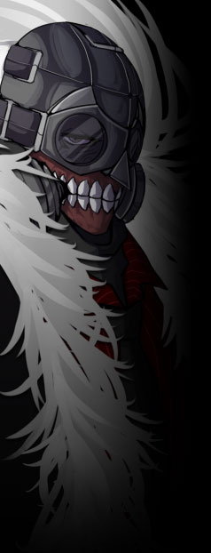

同名のレジスタンスを前身とする、下層の政府機関。イメージワードは【暴力】。
さらに元を正せばジョン＝ドゥが立ち上げたマフィアが母体である。
社会に見捨てられた被差別者、落伍者が集った結果として異能主義的なイデオロギーを帯びていった。
元々、下層を支配しているに等しい組織であったが、ラグナロク事件を契機として正式に下層の管轄を行うようになった。
さらに元を正せばジョン＝ドゥが立ち上げたマフィアが母体である。
社会に見捨てられた被差別者、落伍者が集った結果として異能主義的なイデオロギーを帯びていった。
元々、下層を支配しているに等しい組織であったが、ラグナロク事件を契機として正式に下層の管轄を行うようになった。
グングニルから任命を受けた政府組織……といえば聞こえは良いが、
実際のところ組織としての性格はグングニルおよびオルレアンのそれとは比較にならないほど苛烈。
犯罪者が集いやすく彼らが再起するためのインフラも整っていない下層は法秩序への信頼が薄く、
これを束ねる上では暴力と恐怖による統治を躊躇ってはいられないのである。
テセウスが正規化されて以降は彼らの声を通じて下層の環境も顧みられる機会が増え、状況は改善の傾向にある。
実際のところ組織としての性格はグングニルおよびオルレアンのそれとは比較にならないほど苛烈。
犯罪者が集いやすく彼らが再起するためのインフラも整っていない下層は法秩序への信頼が薄く、
これを束ねる上では暴力と恐怖による統治を躊躇ってはいられないのである。
テセウスが正規化されて以降は彼らの声を通じて下層の環境も顧みられる機会が増え、状況は改善の傾向にある。
構成員は異能者の他、サイボーグ化やその他の理由で差別を受けるに至った者も多く所属している。
組織の性格からならず者の集団のように認識されがちで、実際中らずと雖も遠からずなのだが、
下部組織である武装親衛隊【ヘル】、情報室【ヨルムンガンド】、特殊部隊【フェンリル】のポテンシャルは高く、
組織としての総合力はグングニルにも引けを取らない。
組織の性格からならず者の集団のように認識されがちで、実際中らずと雖も遠からずなのだが、
下部組織である武装親衛隊【ヘル】、情報室【ヨルムンガンド】、特殊部隊【フェンリル】のポテンシャルは高く、
組織としての総合力はグングニルにも引けを取らない。
原典
下層を管轄する機関。
かつては能力者主義を掲げ、上層に挑んだ革命組織。
かつては能力者主義を掲げ、上層に挑んだ革命組織。
元々の母体はマフィアであり、数ある下層のマフィアをジョン＝ドゥが一代でまとめあげた。
武装親衛隊ヘル、情報室ヨルムンガンド、特殊部隊フェンリルを統括する。
武装親衛隊ヘル、情報室ヨルムンガンド、特殊部隊フェンリルを統括する。
グングニルから管轄組織として言い渡されているが、
実質的には下層の暴動の鎮圧、犯罪抑止の意味合いが非常に強い。
下層は上層・中層と比べ、又違った独自社会が形成されている側面があり 、
テセウスの存在は下層のパワーバランスを大きく担っている。
実質的には下層の暴動の鎮圧、犯罪抑止の意味合いが非常に強い。
下層は上層・中層と比べ、又違った独自社会が形成されている側面があり 、
テセウスの存在は下層のパワーバランスを大きく担っている。
元々が能力者主義であった為か、構成員は能力者や虐げられてきた者、
負傷や傷害でサイボーグ化した者などで多く構成されている。
テセウスの多くの者がジョン＝ドゥをビッグ・ボスと慕い、畏れ、敬っている。
負傷や傷害でサイボーグ化した者などで多く構成されている。
テセウスの多くの者がジョン＝ドゥをビッグ・ボスと慕い、畏れ、敬っている。

- 性別
- 男性
- 年齢
- ３５歳
- 能力タイプ
- クリエイター
- 異能名
- 全てを蝕む者 - ペインベノム -
- 一人称
- 俺
- 二人称
- お前、てめぇ、○○
- 三人称
- あいつ
- ベース
- 威圧的、ぶっきらぼう
-
その他
口癖等 -
けっこう褒めて伸ばすタイプかも。
相手が三幹部で信頼してるからというのも
あっただろうが。
テセウスのビッグ・ボス。
威厳とカリスマ、そしてなによりも力で下層をねじ伏せてきた豪傑。
威厳とカリスマ、そしてなによりも力で下層をねじ伏せてきた豪傑。
敵対者には容赦しない反面、仲間には寛大・寛容で面倒見も良い。
どういったわけか小動物や子供には特に懐かれやすい傾向にあり、彼自身も打算か人情か、そう無碍にはしない。
どういったわけか小動物や子供には特に懐かれやすい傾向にあり、彼自身も打算か人情か、そう無碍にはしない。
とはいえ、それも自身や仲間に不利益がなければの話であり、
アンチ能力者の存在を知った際はその正体が悪意のない少女と知ってなお「見つけ次第殺せ」と即断する等、
裏社会を生き抜く上で情に絆されない程度の冷徹さは当然に持ち合わせている。
アンチ能力者の存在を知った際はその正体が悪意のない少女と知ってなお「見つけ次第殺せ」と即断する等、
裏社会を生き抜く上で情に絆されない程度の冷徹さは当然に持ち合わせている。
あらゆるガスを生成する【 ペインベノム 】を持つクリエイター能力者。
ちなみに生成までが異能の範疇で、それ以上の制御は埒外。
その殺傷力は群を抜き、全力を解放すれば下層全土を不毛の地とすることさえ可能。
他方で制御性に難があり、ジョンの姉を死に追いやったのは暴走した彼の異能である。
今でこそ日常に支障がない程度には制御できているものの、今なお彼の身体は薬を受け付けない。
ちなみに生成までが異能の範疇で、それ以上の制御は埒外。
その殺傷力は群を抜き、全力を解放すれば下層全土を不毛の地とすることさえ可能。
他方で制御性に難があり、ジョンの姉を死に追いやったのは暴走した彼の異能である。
今でこそ日常に支障がない程度には制御できているものの、今なお彼の身体は薬を受け付けない。
特徴的なガスマスクは今もなお腐敗し、朽ちていく体を隠すためのもの。
その余命はあと数年と言われている。
その余命はあと数年と言われている。
「気が付けば隣で笑っていた奴が死んでいく。所詮ここはそういう場所さ」
「……好きにしろ。俺は知らん」
「利用できるもんならなんでも利用しろマチルダ。これは戦争だぜ」
「俺達の戦いに大した理由なんざねぇ。ただこのまま許しておけないだけさ」
「てめぇら、人間共や甘っちょろい奴らに思い知らせてやれ！
力の限り暴れてこい！ 思うままに生きてこい！
俺たちが俺たちであることを証明してこい！」
「……好きにしろ。俺は知らん」
「利用できるもんならなんでも利用しろマチルダ。これは戦争だぜ」
「俺達の戦いに大した理由なんざねぇ。ただこのまま許しておけないだけさ」
「てめぇら、人間共や甘っちょろい奴らに思い知らせてやれ！
力の限り暴れてこい！ 思うままに生きてこい！
俺たちが俺たちであることを証明してこい！」
原典
ジョン＝ドゥ
男性 35歳
能力タイプ クリエイター
能力名 全てを蝕む者 - ペインベノム -
男性 35歳
能力タイプ クリエイター
能力名 全てを蝕む者 - ペインベノム -
テセウスのビッグ・ボス。特徴的なマスクをする巨漢。
そのマスクは今もなお腐敗し、朽ちていっている体を隠すものである。
そのマスクは今もなお腐敗し、朽ちていっている体を隠すものである。
あらゆるガスを生成する【 ペインベノム 】を持つクリエイター能力者。
能力の為か、薬を含めるあらゆる毒を受け付けない。
過去、その能力のせいで回復能力者であった姉を死においやっている。
能力の為か、薬を含めるあらゆる毒を受け付けない。
過去、その能力のせいで回復能力者であった姉を死においやっている。
仲間には寛容ではあるが、逆らう者には容赦しない。
威厳とカリスマ、そしてなによりも力で下層をねじ伏せてきた豪傑。
だが身体は能力により蝕まれており、余命はあと数年と言われている。
威厳とカリスマ、そしてなによりも力で下層をねじ伏せてきた豪傑。
だが身体は能力により蝕まれており、余命はあと数年と言われている。
又、それまでバラバラであったマフィアの各勢力は
闇商会【 スヴァルトアルフ 】と蜜月の関係であった。
ジョン＝ドゥによってそれが是正され、
腐敗したマフィア事情が自浄されたとも言える。
闇商会【 スヴァルトアルフ 】と蜜月の関係であった。
ジョン＝ドゥによってそれが是正され、
腐敗したマフィア事情が自浄されたとも言える。
余談だがなぜか猫などの動物や子供に懐かれやすい。
「気が付けば隣で笑っていた奴が死んでいく。所詮ここはそういう場所さ。」
「…好きにしろ。俺は知らん。」
「…好きにしろ。俺は知らん。」